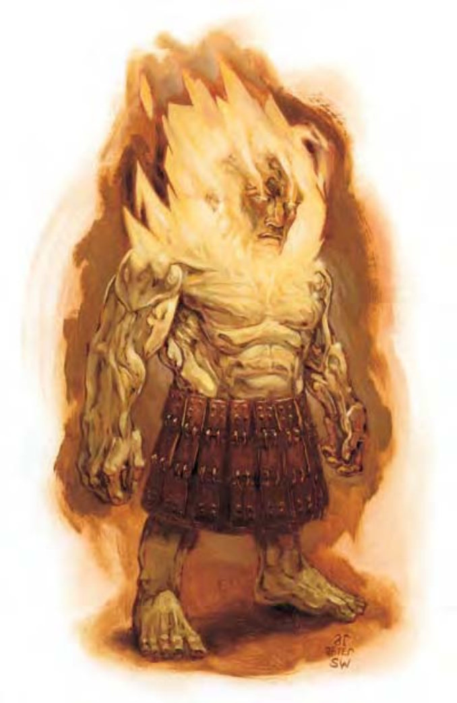

| 资料栏位 | 火矮人 (Azer) 中型异界生物 (外界、火系) |
|---|---|
| 生命骰 | 2d8+2 (11HP) |
| 先攻 | +1 |
| 速度 | 穿着鳞甲时20英尺 (4格)； 基本速度30英尺 |
| 防御等级 | 23 (+1敏捷、+6天生、+4鳞甲、+2重型盾牌)、接触11、措手不及22 |
| 基本攻击/擒抱 | +2 / +3 |
| 攻击 | 战锤+3近战 (1d8+1 / x3 附加1火焰)；或短矛+3远程 (1d6+1附加1火焰) |
| 全力攻击 | 战锤+3近战 (1d8+1 / x3附加1火焰)；或短矛+3远程 (1d6+1附加1火焰) |
| 占用/触及 | 5英尺/5英尺 |
| 特殊攻击 | 烧烫 |
| 特殊能力 | 黑暗视觉60英尺、对火焰免疫、法术抗力13、易受寒冷伤害 |
| 豁免 | 强韧+4、反射+4、意志+4 |
| 属性 | 力量13、敏捷13、体质13、智力12、感知12、魅力9 |
| 技能 | 估价+6、攀爬+0、手艺 (任二)+6、躲藏+0、跳跃-6、聆听+6、搜索+6、侦察+6 |
| 专长 | 猛力攻击 |
| 环境 | 火元素界 |
| 组织 | 单独、成双、组队 (3-4)、中队 (11-20 加上 2 个 3 级军士与 1 个 3 至 6 级干部)、部落 (30-100 加上 50% 非战斗人员， 加上每 20 名成人 1 个 3 级军士、5 个 5 级校尉、3 个 7 级队长) |
| 挑战级数 | 2 |
| 宝藏 | 标准钱币、双倍宝物（须不可燃）、标准物品（须不可燃） |
| 阵营 | 总是守序中立 |
| 进化 | 视人物职业而定 |
| 等级修正值 | +4 |
像长着火焰发须的矮人。有着黄铜色的皮肤，全身仿佛以火和铁铸成。火矮人是居住于火元素界、像矮人的生物。他们穿着黄铜、青铜、赤铜制成的折裙。火矮人通晓火族语和通用语。
战斗火矮人在战斗中使用宽头矛和精铸锤。徒手时则倾向擒抱敌人。火矮人冷漠寡言。除非要从敌人手中解放宝石（火矮人的挚爱），否则火矮人极少引发战斗。若受到威胁，火矮人会战到死亡为止。但他们也知道俘虏的价值。
烧烫（特异）：火矮人的高体温在进行徒手攻击时可造成额外的火焰伤害。持用的金属武器亦同。
火矮人拥有组织紧密的社会结构，每个成员各司其职。团体利益永远凌驾个人利益之上。火矮人贵族非常强，掌握绝对权力。火矮人住在火元素界的青铜要塞，搜集宝石时才偶尔到其他界域。火矮人讨厌火巨灵，两者无止尽地争夺领地与奴隶。
火矮人的人物少数火矮人会脱离其组织良好的族群，抛弃族人的绝对规范而出外冒险。这些火矮人是猛烈的战士，随时准备攻击。